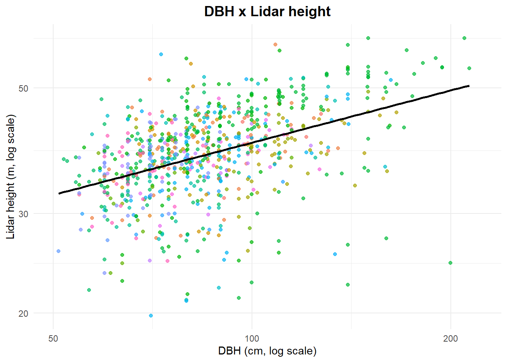

7 Workflow to extract tree height from Lidar CHM
7.1 Introduction
This is the final script to extract tree heights from Canopy Height Models (CHMs) generated from LiDAR-derived point clouds in a forest management area. Two CHMs will be used: one from the year before harvesting and one from the year after. The paths to the CHMs for each area are provided in a table.
Data from the Forest Inventory of the area are also incorporated (from Chapter 3). The goal is to identify the crowns of harvested trees and obtain their heights from the CHM metrics. Step-by-step processing of the workflow can be found in the Chapter 6 script.
7.2 Lecture
- CHM generation: Fischer et al. (2024).
7.3 Setup
You need terra package to handle spatial data and dplyr to manipulate tabular data.
7.4 Parameters
Then we set the script parameters.
lim_inf = Percentage points threshold to be considered as a gap. When subtracting two CHMs the output difference can be full of noises (a branch that broke or moved for example). Setting a threshold ensures we will select only the large differences.
pol_area = Minimum area to be considered as a gap (m2).
projection = Projection of spatial data.
buffer_size = Buffer size around each tree to avoid confusing very close trees and also to identify the associated gap.
percentil = Percentile used to extract maximum height in the identified canopy area.
7.5 Data
The CHMs were generated by Fabian Fischer from Brazilian Forest Concessions Lidar data, using the method described in Fischer et al. (2024).
Commercial inventories were obtained from Brazilian Forest Concessions.
7.6 Running Code
7.7 CHM processing
Read the table with the file path of each CHM before and after exploitation for each APU. Read the commercial forest inventory merged with logbook records in the 13_merge_if100_romaneio.qmd script.
Let’s loop it
Code
for (i in 1:length(chm_list)) {
upa <- chm_list$apu[i]
umf <- chm_list$fmu[i]
lid.antes <- chm_list$before_exploit[i]
lid.depois <- chm_list$after_exploit[i]
stopifnot(file.exists(lid.antes))
stopifnot(file.exists(lid.depois))
r1 <- rast(lid.antes)
r2 <- rast(lid.depois)
if (crs(r1) != projection) r1 <- project(r1, projection)
if (crs(r2) != projection) r2 <- project(r2, projection)
ext_intersect <- terra::intersect(ext(r1), ext(r2))
r1_crop <- crop(r1,
ext_intersect)
r2_crop <- crop(r2,
ext_intersect)
diff_raster <- r2_crop - r1_crop
diff_raster <- mask(diff_raster,
(!is.na(r1_crop) & !is.na(r2_crop)))
q1 <- quantile(values(diff_raster),
probs = lim_inf,
na.rm = TRUE)
r_low <- diff_raster
r_low[diff_raster > q1] <- NA
r_low[!is.na(r_low)] <- 1
r_low_patches <- patches(r_low, directions = 8)
poly_low <- as.polygons(r_low_patches,
dissolve = T,
na.rm = TRUE)
crs(poly_low) <- projection
poly_low$area_m2 <- expanse(poly_low,
unit = "m")
poly_filtrado <- poly_low[poly_low$area_m2 > pol_area, ]
upa.umf <- paste0("Jamari_",
"UMF_",
umf,
"_UPA_",
upa)
if100_upa <- if100_romaneio %>%
filter(codigo == upa.umf)
if (all(is.na(if100_upa$vol_tora))) {
message("Volume de tora igual a zero na iteração ", i)
next
}
if100_upa <- if100_upa[!is.na(if100_upa$vol_tora), ]
if100_pts <- vect(if100_upa,
geom = c("Longitude",
"Latitude"),
keepgeom = TRUE,
crs = "EPSG:4674")
crs(if100_pts) <- "EPSG:4674"
if100_pts <- project(if100_pts,
projection)
if100_pts <- crop(if100_pts,
diff_raster)
if100_pts$ID <- 1:nrow(if100_pts)
buffer_if100 <- buffer(if100_pts,
width = buffer_size)
toca <- relate(buffer_if100,
buffer_if100,
"overlaps")
diag(toca) <- FALSE
tocam_outros <- apply(toca, 1, any)
b_isolados <- buffer_if100[!tocam_outros]
pts_sel <- if100_pts[ if100_pts$id_arv %in% b_isolados$id_arv , ]
sel <- relate(poly_filtrado,
b_isolados,
"intersects")
lista_copas <- apply(sel,
2,
function(x) which(x))
idx_mantidos <- c()
for (o in seq_along(lista_copas)) {
copas_idx <- lista_copas[[o]]
if (length(copas_idx) == 0) next
if (length(copas_idx) == 1) {
idx_mantidos <- c(idx_mantidos,
copas_idx)
next
}
distancias <- distance(
pts_sel[o, ],
poly_filtrado[copas_idx, ]
)
idx_melhor <- copas_idx[ which.min(distancias) ]
idx_mantidos <- c(idx_mantidos,
idx_melhor)
}
idx_mantidos <- unique(idx_mantidos)
idx_mantidos <- idx_mantidos[!is.na(idx_mantidos)]
if (length(idx_mantidos) == 0){
message("Pulando iteração ", i, ": idx_mantidos é NA")
next
}
pol_copas_sel <- poly_filtrado[idx_mantidos, ]
m <- relate(pol_copas_sel, b_isolados, "intersects")
idx <- apply(m,
1,
function(x) ifelse(any(x),
which(x)[1],
NA))
pol_copas_sel$ID_B <- b_isolados$ID[idx]
valores <- terra::extract(r1,
pol_copas_sel)
valores <- na.omit(valores)
colnames(valores) <- c("id_pol", "z")
stats <- valores %>%
group_by(id_pol) %>%
summarise(z_lidar = quantile(z,
percentil,
na.rm = TRUE))
pol_copas_sel$z_lidar <- stats$z_lidar
if100_pts_df <- as.data.frame(if100_pts)
pol_copas_sel_df <- as.data.frame(pol_copas_sel)
if100_pts_z <- left_join(if100_pts_df,
pol_copas_sel_df,
by = c("ID" = "ID_B"))
write.csv(if100_pts_z,
file = paste0("output/tree_height/",
"Jamari",
"_FMU_",
umf,
"_APU_",
upa,
"_if100_pts_z.csv"))
}And now we merge all the outputs tables
Code
list_csv <- list.files("output/tree_height/",
"*pts_z.csv$",
full.names = T)
all_tables <- do.call(rbind,
lapply(list_csv,
read.csv,
stringsAsFactors = FALSE)
)
write.csv(all_tables,
file = "output/tree_height/all_tables.csv")
text <- paste(sum(!is.na(all_tables$z_lidar)),
" tree heights were estimated from LiDAR data.")798 tree heights were estimated from LiDAR data.
Let’s take a look to the data distribution
Code

Code
ggplot(all_tables,
aes(x = DAP,
y = z_lidar)) +
geom_point(alpha = 0.7,
aes(color = nome_florabr),
show.legend = F) +
geom_smooth(method = "lm",
se = FALSE,
color = "black"
) +
scale_x_log10() +
scale_y_log10() +
theme_minimal() +
labs(
title = "DBH x Lidar height",
x = "DBH (cm, log scale)",
y = "Lidar height (m, log scale)"
) +
theme(
plot.title = element_text(hjust = 0.5,
size = 14,
face = "bold"),
legend.title = element_text(face = "bold")
)